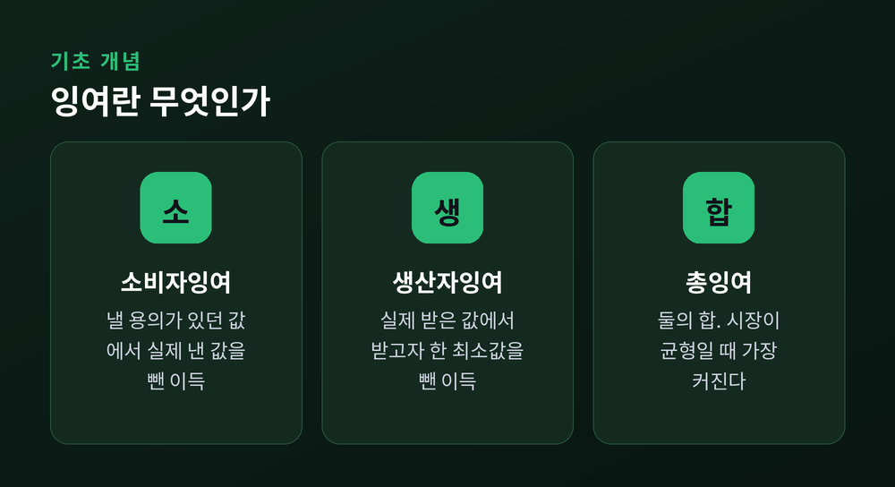
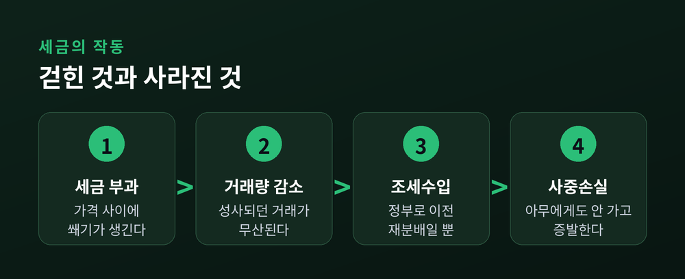
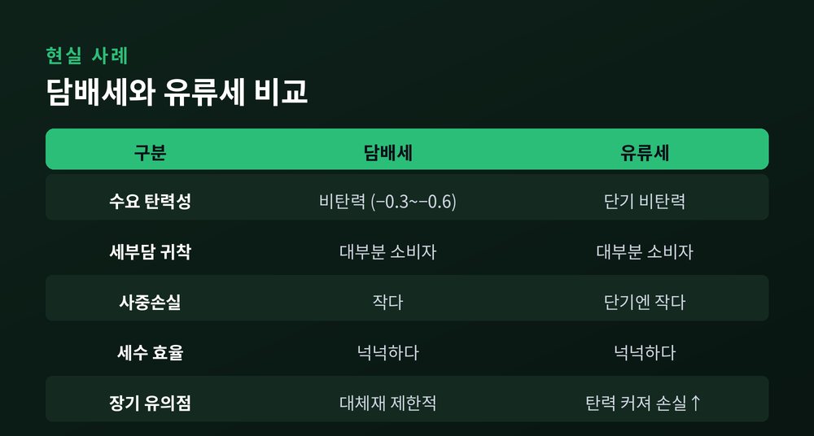

세금은 왜 사회적 손실을 낳나 — 사중손실과 조세 귀착의 경제학
이번 글에서는 세금이 어떻게 사회 전체의 후생을 갉아먹는지를 정리해 보겠습니다. 소비자잉여와 생산자잉여에서 출발해, 사중손실이라는 삼각형이 왜 생기는지, 그리고 세금의 진짜 부담이 누구에게 돌아가는지를 차근히 살펴봅니다. 결론을 먼저 말씀드리면 이렇습니다. 세금은 정부의 곳간을 채우는 동시에, 누구의 주머니에도 들어가지 않고 그냥 사라져 버리는 후생을 남깁니다.

잉여라는 개념부터
시장에는 두 종류의 이득이 있습니다.
하나는 소비자잉여입니다. 어떤 사람이 커피 한 잔에 5천 원까지 낼 마음이 있는데 실제로는 4천 원에 샀다면, 그 차액 1천 원이 소비자잉여입니다. 지불할 용의가 있던 금액에서 실제로 낸 값을 뺀 것이지요.
다른 하나는 생산자잉여입니다. 3천 원만 받아도 팔 생각이 있던 사람이 4천 원에 팔았다면, 그 차액 1천 원이 생산자잉여입니다.
이 둘을 합친 것이 총잉여입니다. 시장이 수요와 공급이 만나는 균형에 놓일 때 총잉여는 가장 커집니다. 이 지점에서는 서로에게 이익이 되는 거래가 하나도 빠짐없이 성사됩니다. 자원이 가장 효율적으로 배분된 상태인 셈입니다.

세금이 만드는 쐐기
여기에 세금이 들어오면 균형이 흔들립니다.
세금은 소비자가 내는 가격과 생산자가 손에 쥐는 가격 사이에 틈을 벌립니다. 경제학에서는 이 틈을 조세 쐐기라고 부릅니다. 쐐기의 폭이 곧 단위당 세액입니다.
소비자가 치르는 값은 올라갑니다. 생산자가 실제로 받는 값은 내려갑니다. 두 가격의 차이만큼을 정부가 가져갑니다.
문제는 여기서 끝나지 않습니다. 가격이 왜곡되면 거래량이 줄어듭니다. 세금이 없었다면 성사됐을 거래 가운데 일부가, 세금 때문에 더 이상 성사되지 않습니다. 살 마음이 있던 사람과 팔 마음이 있던 사람이 있는데도, 세금이라는 벽에 막혀 거래가 무산되는 것입니다.
사라지는 삼각형, 사중손실
세금이 걷어간 잉여를 자세히 뜯어보면 두 부분으로 나뉩니다.
한 부분은 소비자와 생산자에게서 정부로 옮겨간 몫입니다. 이것은 조세수입입니다. 누군가의 손해가 다른 누군가(정부, 결국 국민)의 이득이 되었으니 재분배일 뿐, 사회 전체로 보면 사라진 것이 아닙니다.
다른 한 부분이 진짜 문제입니다. 무산된 거래에서 나왔어야 할 잉여는 소비자에게도, 생산자에게도, 정부에게도 가지 않습니다. 그냥 증발합니다. 이 사라진 후생이 바로 사중손실(deadweight loss)입니다.
그래프에서 사중손실은 수요곡선과 공급곡선 사이에, 줄어든 거래량과 원래 균형거래량 사이에 걸치는 삼각형으로 나타납니다. 그래서 후생손실 삼각형이라고도 부릅니다.
크기도 가늠할 수 있습니다. 삼각형의 넓이는 밑변 곱하기 높이의 절반입니다. 밑변은 단위당 세액, 높이는 줄어든 거래량입니다. 정리하면 사중손실은 대략 '세액 × 거래량 감소분 ÷ 2'가 됩니다.

세금은 누가 부담하나 — 조세 귀착
세금을 법적으로 누가 내는지와, 실제로 누가 부담하는지는 다른 문제입니다.
법에 '판매자가 납부한다'고 적혀 있어도, 판매자는 가격을 올려 그 일부를 소비자에게 떠넘길 수 있습니다. 반대의 경우도 마찬가지입니다. 법이 정한 납세자(법적 귀착)와 실제로 부담을 지는 사람(경제적 귀착)은 별개입니다.
그렇다면 실제 부담은 무엇이 가를까요. 답은 탄력성입니다.
원리는 간명합니다. 가격 변화에 덜 민감한 쪽, 즉 더 비탄력적인 쪽이 세금을 더 많이 짊어집니다. 도망갈 여지가 적은 쪽이 세금을 떠안게 되는 셈이지요. 수요가 공급보다 비탄력적이면 소비자가 대부분을 부담합니다. 공급이 더 비탄력적이면 생산자가 대부분을 부담합니다.
탄력성이 클수록 손실이 커지는 이유
탄력성은 사중손실의 크기도 좌우합니다.
앞서 삼각형의 밑변은 세액, 높이는 거래량 감소분이라고 했습니다. 세액이 같아도, 탄력성이 크면 거래량이 크게 줄어듭니다. 높이가 커지니 삼각형도 커집니다.
탄력적인 시장에서는 가격이 조금만 올라도 사람들이 대거 등을 돌립니다. 그만큼 무산되는 거래가 많고, 사라지는 후생도 큽니다. 반대로 비탄력적인 시장에서는 가격이 올라도 거래량이 거의 그대로입니다. 사중손실은 작습니다.
극단을 상상하면 분명해집니다. 수요가 완전히 비탄력적이라면, 세금을 매겨도 거래량은 전혀 줄지 않습니다. 이때 사중손실은 0입니다. 손실 없이 세금만 걷히는 것입니다.
예전에는 '세금은 무조건 나쁘다'는 식으로 뭉뚱그려 생각하기 쉬웠습니다. 지금은 다르게 봅니다. 세금의 효율 비용은 대상 시장이 얼마나 예민하게 반응하느냐에 달려 있습니다.
담배세와 유류세라는 실제 사례
이 원리는 현실 세금에 그대로 나타납니다.
담배 수요의 가격탄력성은 대체로 −0.3에서 −0.6 사이로 추정됩니다. 절댓값이 1보다 작으니 비탄력적입니다. 중독성 탓에 값이 올라도 소비량이 크게 줄지 않기 때문입니다. 그래서 담배세는 세 가지 특징을 보입니다. 흡연을 줄이는 효과는 제한적이고, 부담은 대부분 소비자에게 전가되며, 사중손실은 작은 반면 세수는 넉넉합니다.
유류세도 결이 비슷합니다. 가솔린 수요는 특히 단기에 비탄력적이어서, 세금이 소비자에게 전가되고 효율 비용이 작습니다.
다만 한계도 분명합니다. 장기에는 이야기가 달라집니다. 시간이 지나면 소비자는 연비 좋은 차나 대체 교통수단을 찾고, 생산자도 대체 기술을 모색합니다. 반응할 여유가 생기면 탄력성이 커지고, 같은 세금이라도 사중손실이 커집니다.

최적과세의 직관 — 램지 규칙
여기서 자연스러운 물음이 떠오릅니다. 어차피 세금을 걷어야 한다면, 손실을 최소화하는 방법은 없을까요.
경제학자 램지가 1927년에 내놓은 답이 있습니다. 정해진 세수를 걷되 후생손실을 줄이려면, 수요가 비탄력적인 재화에 더 높은 세율을 매기라는 것입니다. 재화들이 서로 독립적이라는 단순한 경우, 이 원칙은 '세율을 탄력성에 반비례시키라'는 역탄력성 규칙으로 압축됩니다.
직관은 앞의 논리 그대로입니다. 비탄력적인 재화는 세금을 매겨도 거래가 별로 줄지 않아 왜곡이 작습니다. 탄력적인 재화에 무겁게 매기면 거래가 크게 줄어 손실이 큽니다. 그러니 효율만 따지면 비탄력재에 무겁게 매기는 편이 낫습니다.
그러나 여기에는 아픈 지점이 있습니다. 비탄력적인 재화는 대개 생필품입니다. 탄력적인 재화는 대개 사치재입니다. 효율만 좇아 필수재에 무거운 세금을 매기면, 형편이 어려운 사람일수록 부담이 커지는 역진성이 생깁니다. 효율과 공평이 정면으로 부딪히는 것입니다. 그래서 현실의 조세 설계는 램지의 효율 논리와 형평의 요구를 함께 저울질할 수밖에 없습니다.
끝으로 한 마디만 더 드리겠습니다.
세금을 둘러싼 논쟁은 대개 '얼마를 걷느냐'에 쏠립니다. 그러나 경제학이 알려주는 진짜 초점은 다른 데 있습니다. 세금은 걷는 액수만큼만 사회에서 빠져나가는 것이 아닙니다. 아무도 갖지 못한 채 사라지는 삼각형까지 함께 계산해야 합니다.
“좋은 세금은 많이 걷는 세금이 아니라, 덜 사라지게 하는 세금이다.”
세금을 볼 때 그 삼각형의 크기를 함께 떠올릴 수 있다면, 숫자 너머의 비용까지 읽어내신 것이라 생각합니다.